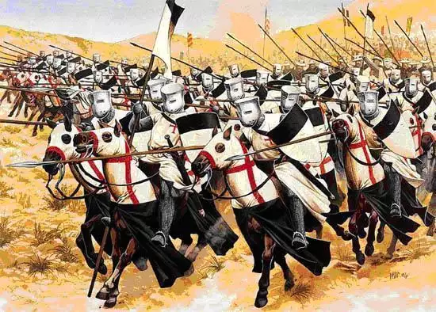
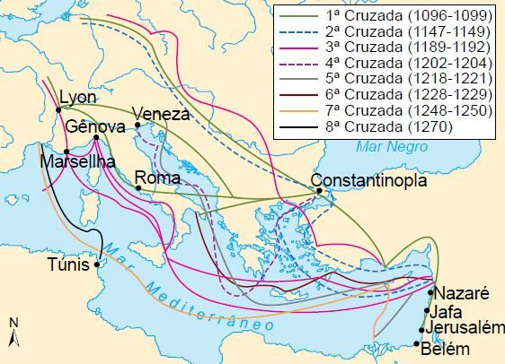
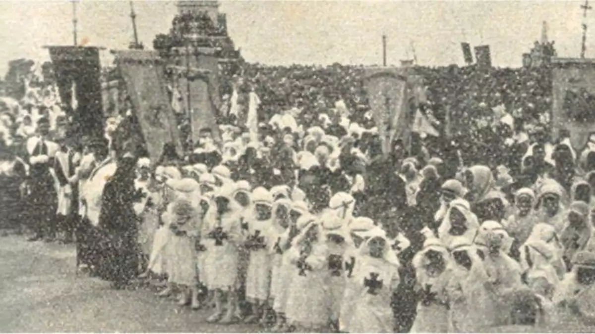

<!DOCTYPE html>

<html lang="pt-br">
</html>

<head>
<meta charset="UTF-8">
    <style> 


    </style>
 </head>

 <body bgcolor="white" > 
<div id=interface>

<header id="cabeçalho">

   
    <meta name="viewport" content="width=device-width, initial-scale=1">

  
    <link rel="stylesheet" href="css/base.css">
    <link rel="stylesheet" href="css/vendor.css">
    <link rel="stylesheet" href="css/main.css">

   
    <script src="js/modernizr.js"></script>

   
 
     	<center><h2>as cruzadas</h2></center>

<center>  <center>	
	
 <p>"No século XI, a Europa vivia um período de paz, depois de longos séculos bárbaras. Essa paz e a prosperidade reinante provocaram um aumento na população, a retomada das atividades comerciais e o ressurgimento das cidades." As Cruzadas foram expedições com fins religiosos, militares e econômicos, que ocorreram entre os séculos XI e XIII, empreendidas pelos cristãos contra os muçulmanos.Seu objetivo oficial era “libertar” Jerusalém, a Terra Santa, então sob domínio turco.<p>                                                                                                                                         
 <center>  <center>
	
<h2 style= "text-align:center; font-family: sans-serif;
	font-size: 15pt;
	color: white;
	text-align:;  white;">OBJETIVO</h2>


 <p>Para os cristãos, ter de volta o acesso aos locais sagrados para o Cristianismo era uma prioridade. As Cruzadas ganharam aspecto de guerra santa, pois o combate se daria contra estrangeiros que professavam uma fé diferente do cristianismo.

Já para os comerciantes, as Cruzadas eram fundamentais para aproximar o Oriente do Ocidente e, assim, ampliar as atividades comerciais, principalmente as de Gênova e Veneza, na Península Itálica. Após séculos, o Mar Mediterrâneo voltou a ser utilizado como meio de transporte de pessoas e de mercadorias.

Ao longo das nove Cruzadas, seus objetivos se modificaram, deixando de ter um aspecto religioso e ganhando motivações comerciais. As conquistas cristãs no Oriente provocaram, além disso, disputas entre os cruzados pelos seus domínios.
Quais foram as Cruzadas?<p>

<p>Por ser uma expedição religiosa, o misticismo esteve presente nas primeiras Cruzadas. Em 1096, um monge ermita conhecido como Pedro fez pregações defendendo a ida dos cavaleiros até a Palestina. Com seu discurso, ele conseguiu angariar uma multidão de indivíduos que decidiram participar das jornadas.

Para arrecadar fundos que financiassem a primeira expedição, os primeiros cruzados buscaram dinheiro de não cristãos ricos. Os judeus foram os primeiros a serem atacados pelos cruzados e perseguidos em vários reinos europeus.

A Cruzada Popular ou dos Mendigos foi a primeira jornada que saiu da Europa Ocidental em direção ao Oriente. Por onde passavam, os cruzados promoviam saques e violentavam aldeias locais.

Em agosto de 1096, a expedição chegou em Constantinopla. Mesmo com a fama advinda dos massacres e assaltos, os cruzados foram recebidos pelo imperador bizantino Aleixo I. Ele pediu para que o grupo aguardasse a chegada de tropas mais bem equipadas para seguirem viagem até a Palestina. Enquanto aguardavam, os cruzados realizaram saques pela cidade.

Um mês depois de sua chegada em Constantinopla, os cruzados foram até áreas próximas às fronteiras com os islâmicos e lançaram a primeira ofensiva, mas foram derrotados. Mesmo com esse revés, o grupo seguiu até Niceia e iniciou um novo ataque contra seu inimigo. Apesar da vitória na primeira batalha, o exército do sultão Quilije Arslã I conseguiu derrotá-los.<p>


<p>Mapa de todas as cruzadas abaixo.<p>

<center>  <center>

<h4 style= "text-align:center; font-family: sans-serif;
	font-size: 15pt;
	color: white;
	text-align:;:  white;">PRIMEIRA CRUZADA (1096-1099)</h4>
    

<p>Influenciado pela promessa do papa Urbano II de que o cavaleiro que participasse das Cruzadas teria o perdão de seus pecados, as primeiras expedições obtiveram inúmeros participantes, desde nobres até peregrinos.

Em 1097, a Primeira Cruzada saiu de Constantinopla em direção a Jerusalém. Os cruzados fizeram a promessa de devolver ao Império Bizantino as terras tomadas pelos turcos. Ao contrário da Cruzada Popular ou dos Mendigos, a Primeira Cruzada teve a participação de cavaleiros ricos. Logo surgiram desentendimentos entre bizantinos e cruzados. A participação de mercenários tinha o apoio dos bizantinos, mas era rejeitada pelos cruzados.

A Primeira Cruzada logo obteve suas primeiras vitórias. As cidades de Niceia e Antioquia foram tomadas. Em 1099, Jerusalém também foi conquistada. Os cruzados reprimiram os inimigos e usaram a força para impor seu domínio sobre a população local. As terras conquistadas foram divididas, e a promessa de devolução da parte bizantina não foi cumprida. O sistema feudal foi, então, implantado no Oriente.

A presença ocidental cristã durou um século. Em pouco, os turcos conseguiram se unir e impor uma derrota aos cruzados. As terras dominadas pelos cristãos foram retomadas pelos islâmicos. Para saber mais, leia: Primeira Cruzada e a Conquista de Jerusalém.<p>

<h5 style= "text-align:center; font-family: sans-serif;
	font-size: 15pt;
	color: white;
	text-align:;:  white;">SEGUNDA CRUZADA (1147-1149)</h5>
    
  <P>Em 1145, o papa Eugênio III e São Bernardo convocaram mais uma cruzada. Os reis Luís VII, da França, e Conrado III, do Sacro Império, atenderam à convocação e organizaram a Segunda Cruzada. Porém, essa expedição demonstrou novamente rupturas dentro dos próprios cruzados. Alguns almejavam um ataque imediato, outros aguardavam o momento certo para fazê-lo. Até 1187, nenhuma expedição foi organizada, até que Jerusalém foi tomada pelo exército de Saladino.<P>

<h6 style= "text-align:center; font-family: sans-serif;
	font-size: 15pt;
	color: white;
	text-align:;:  white;">Terceira Cruzada (1189–1192)</h6>
    

<P>A Terceira Cruzada foi convocada pelo papa Gregório III, logo após o sultão Saladino conquistar Jerusalém. Os principais reis europeus fizeram parte dessa jornada até a Terra Santa, sendo eles Filipe Augusto (França), Frederico Barba Ruiva (Sacro Império Germânico) e Ricardo Coração de Leão (Inglaterra). Porém, Barba Ruiva morreu afogado na Cicília, e os reis Filipe Augusto e Ricardo Coração de Leão se desentenderam. Ao final, apenas o rei inglês persistiu na campanha.

Os cruzados obtiveram sucesso ao conquistar Chipre, Acre e Jafa. Ao se aproximarem de Jerusalém, os cruzados travaram uma grande batalha contra o exército de Saladino. Em 1192, um acordo foi feito entre cristãos e islâmicos. Jerusalém permaneceria sob o comando islâmico, mas com a abertura da cidade santa para peregrinações cristãs, desde que desarmadas.<P>
  
<h6 style= "text-align:center; font-family: sans-serif;
	font-size: 15pt;
	color: white;
	text-align:;:  white;">Quarta Cruzada (1202–1204)</h6>

<P>Apesar do acordo firmado com os islâmicos em 1192, uma nova expedição foi convocada pelo papa Inocêncio III, com o objetivo de conquistar Jerusalém. A convocação se deu em 1198, mas sua organização se concretizou apenas dois anos depois.

A Quarta Cruzada foi caracterizada por motivações comerciais. O duque Enrique Dandolo fez o transporte dos cruzados em troca de dinheiro. Esses interesses econômicos começaram a interferir nas campanhas.<P>

<h6 style= "text-align:center; font-family: sans-serif;
	font-size: 15pt;
	color: white;
	text-align:; white;">Cruzada das crianças (1212)</h6>


<p>A Cruzada das Crianças, ocorrida em 1212, é envolta de fatos inusitados e lendas. Acreditava-se que apenas as almas puras poderiam libertar Jerusalém. Por causa disso, milhares de crianças foram colocadas em navios saindo de Marselha, na França, em direção ao Oriente. Essa ideia teria surgido em Constantinopla, uma cidade cristã que havia sido saqueada por cruzados.

Dessa forma, de acordo com a crença popular, os adultos não eram confiáveis, e apenas as crianças poderiam participar das expedições. Ao longo do caminho, várias crianças morreram de fome e frio e as que sobreviveram foram vendidas como escravas.<p>
<center>  <center>

<h6 style= "text-align:center; font-family: sans-serif;
	font-size: 15pt;
	color: white;
	text-align:;:  white;">Quinta Cruzada (1217–1221)</h6>

<p>A Quinta Cruzada também foi convocada pelo papa Inocêncio III, em 1217, e teve a participação do rei André II, da Hungria, e Leopoldo VI, duque da Áustria. Desta vez, a tática dos cristãos era conquistar primeiramente o Egito para depois atacar Jerusalém. Uma crise na liderança egípcia permitiu que os cristãos dominassem a região. O sultão ofereceu o reino de Jerusalém e dinheiro para os cristãos deixarem o Egito, mas a proposta foi recusada.

Os cristãos conquistaram a cidade de Damieta, mas conflitos entre os cruzados fizeram com que se perdesse tempo, possibilitando o restabelecimento do exército islâmico, que contra-atacou os cristãos e os derrotou em 1221.<p>

<h6 style= "text-align:center; font-family: sans-serif;
	font-size: 15pt;
	color: white;
	text-align:;:  white;">Sexta Cruzada (1228–1229)</h6>

<p>A Sexta Cruzada foi liderada pelo Sacro Império de Frederico II, que havia sido excomungado pelo papa. Sua excomunhão fez com que seus soldados desertassem a campanha ao longo do caminho até o Oriente.

Frederico II fez um acordo com o sultão Camil, que lhe garantiu a posse de Jerusalém, Belém e Nazaré por dez anos. Porém, a derrota dos cristãos para os islâmicos em Gaza, em 1224, fez com que sua conquista fosse perdida.<p>

<h6 style= "text-align:center; font-family: sans-serif;
	font-size: 15pt;
	color: white;
	text-align:;:  white;">Sétima Cruzada (1248–1254)</h6>


<p>Essa cruzada foi liderada pelo rei francês Luís IX, canonizado como São Luís. Em 1248, ele se dirigiu ao Egito e conquistou a cidade de Damieta. O exército cristão foi derrotado, e o rei, preso. Os franceses pagaram pela sua libertação.<p>

<h6 style= "text-align:center; font-family: sans-serif;
	font-size: 15pt;
	color: white;
	text-align:;:  white;">Oitava Cruzada (1270)</h6>

<p>As últimas Cruzadas foram marcadas pela derrota dos cristãos para os islâmicos. A Oitava Cruzada foi liderada pelo rei francês Luís IX, que, novamente, se dirigiu para o Egito. Os cruzados desembarcaram em Túnis e foram contaminados por uma peste que matou inúmeros cristãos<p>

<h6 style= "text-align:center; font-family: sans-serif;
	font-size: 15pt;
	color: white;
	text-align:;:  white;">Nona Cruzada (1271–1272)</h6>

<p>Com a morte do rei Luís IX, o rei da Inglaterra, Eduardo, decidiu lutar no Oriente, mas a morte de seu pai, Henrique III, fez com que Eduardo retornasse para a Inglaterra e assumisse o trono. Para alguns estudiosos, a Nona Cruzada é considerada uma continuação da oitava. Problemas sucessórios na Monarquia inglesa se sobrepuseram à retomada de Jerusalém, que, à época, estava nas mãos dos islâmicos.

Confira no nosso podcast: Os reis mais malucos da história
Consequências das Cruzadas

As Cruzadas aprofundaram a rivalidade entre cristãos e islâmicos. Porém, do ponto de vista econômico, as expedições possibilitaram o fortalecimento do comércio e o transporte de especiarias para o mercado europeu.

Além disso, as Cruzadas retomaram as relações entre Ocidente e Oriente. Os reis acabaram fortalecidos, pois demonstraram seu poder militar perante os senhores feudais, que já sinalizavam a perda de seu domínio, à medida que a Idade Média começava a entrar em crise."<p>
 <center> <iframe width="560" height="315" src="https://www.youtube.com/embed/1MLecMRxv6I" title="YouTube video player" frameborder="0" allow="accelerometer; autoplay; clipboard-write; encrypted-media; gyroscope; picture-in-picture" allowfullscreen></iframe><center>
</header>
 </div>	 
 <div> <CreateObject>
              <center>    <a href="index.html"><button>Voltar para o Inicio</button></a></div>
</center>
            </div> 
  
</body>

<SCRIPT Language=VBScript><!--
